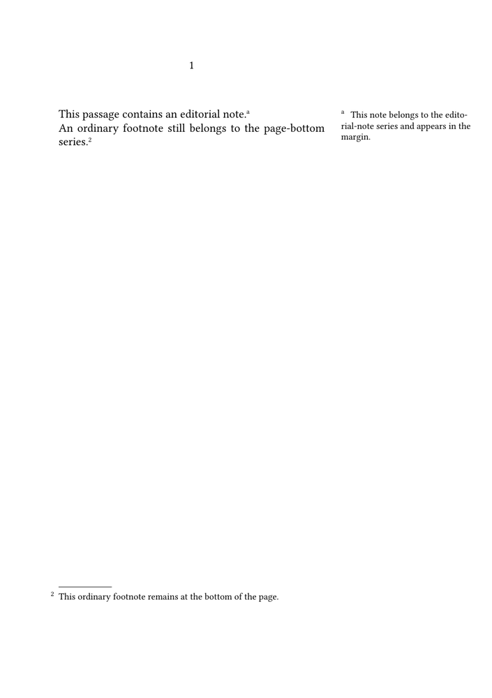
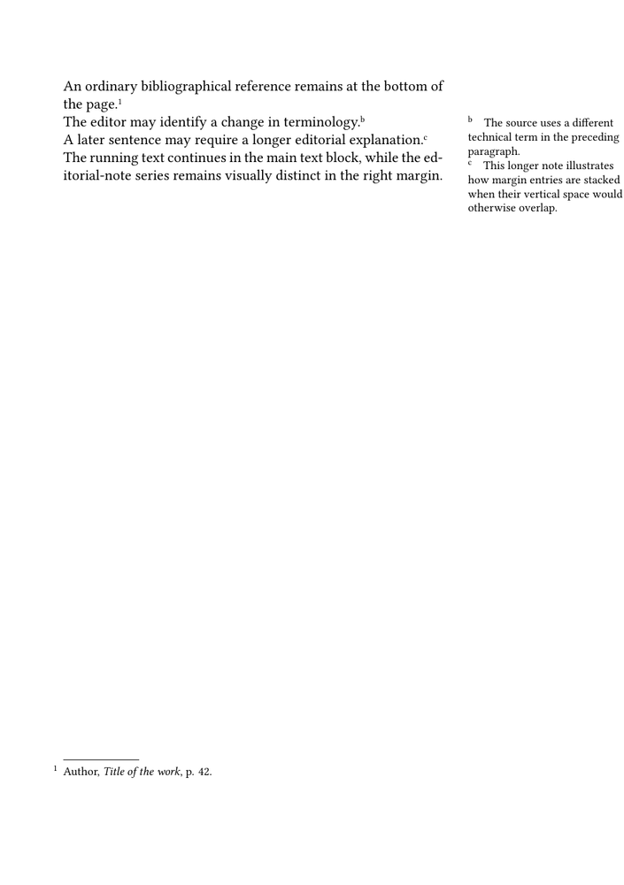

Footnotes in ConTeXt · Overview · Tutorial · How-to guides · Placing numbered notes in the margin · Reference · Explanation · Glossary
This page has recently been revised and reorganized.
Further corrections, additions, and improvements are welcome. Please feel free to edit or modify this page to improve it.
Margin and alternative placement · Previous: Formatting footnotes · How-to guides overview · Next: Using local notes in tables, floats, and boxes
Contents
- 1 1. Goal
- 2 2. Distinguish marginal remarks from numbered margin notes
- 3 3. Add a simple marginal remark
- 4 4. Prepare the margin area
- 5 5. Place a collected note block in the margin
- 6 6. Place note entries near their marks
- 7 7. Choose the appropriate method
- 8 8. Use a custom note series in the margin
- 9 9. Control the appearance of margin notes
- 10 10. Adapt the method to the left or outer margin
-
11
11. Common mistakes
- 11.1 11.1. Failing to reserve enough margin width
- 11.2 11.2. Confusing location=none with suppression
- 11.3 11.3. Expecting a collected block to align with individual marks
- 11.4 11.4. Omitting stack=continue
- 11.5 11.5. Moving every note series into the margin unnecessarily
- 11.6 11.6. Using long discursive notes in a narrow margin
- 11.7 11.7. Testing only one short note
- 12 12. Complete example
- 13 13. What this guide has established
- 14 14. Next steps
1. Goal
Place numbered note entries in a page margin instead of at the bottom of the page.
This guide distinguishes three different requirements:
- a short, unnumbered marginal remark;
- a complete numbered note block collected in the margin;
- numbered note entries placed as close as possible to their marks.
Result
The note marks remain in the running text, while the corresponding note entries are placed in a configured margin area.
2. Distinguish marginal remarks from numbered margin notes
A simple marginal remark is not the same thing as a numbered note series.
Use a direct margin command when:
- the remark does not require a counter;
- no note mark is needed in the running text;
- the annotation belongs visibly beside one passage;
- no later collection or cross-reference is required.
Use a note series in the margin when:
- the notes require numbers, letters, or symbols;
- marks must remain in the running text;
- the notes belong to a defined editorial category;
- counters and stable references must be preserved.
Position does not define structure
Two annotations may both appear in the margin, while only one belongs to a numbered note series.
3. Add a simple marginal remark
For a short annotation that does not belong to a note series, use a direct margin command such as \inrightmargin.
3.1. MWE: an unnumbered marginal remark
-
\setuppapersize[A5] \setupbodyfont [libertinus,10pt] \setuplayout [width=8cm, rightmargin=3cm, rightmargindistance=.5cm] \starttext This sentence contains a marginal remark. \inrightmargin{A short remark in the margin.} The remark does not use the footnote counter and does not create a note entry. \stoptext
This method is suitable for:
- keywords;
- short summaries;
- editorial labels;
- navigation cues;
- brief comments that require no numbering.
Do not use a full note series for every marginal annotation
A direct margin command is simpler when the annotation does not require note semantics.
4. Prepare the margin area
A margin-note layout requires enough horizontal space beside the main text.
For example:
\setuplayout [width=8cm, rightmargin=4cm, rightmargindistance=.5cm]
The principal settings are:
| Setting | Function |
|---|---|
width
|
Sets the width of the main text block. |
rightmargin
|
Sets the width of the right margin. |
rightmargindistance
|
Sets the gap between the main text block and the margin. |
The dimensions above are illustrative. They must be adapted to the paper size, body font, binding, and expected note length.
Test the geometry with realistic notes
A margin that appears sufficient for one short annotation may produce poor line breaks and excessive note height when longer or closely spaced notes are used.
5. Place a collected note block in the margin
The simpler method places all pending entries from a note series in one margin block.
First disable ordinary automatic placement:
\setupnote [footnote] [location=none]
The logical notes and their marks still exist, but their entries are not placed automatically.
The pending entries can then be printed with:
\placenotes[footnote]
5.1. MWE: a collected footnote block in the right margin
-
\setuppapersize[A5] \setupbodyfont [libertinus,10pt] \setuplayout [width=8cm, rightmargin=4cm, rightmargindistance=.5cm] \setupnote [footnote] [location=none, bodyfont=small] \setupnotation [footnote] [alternative=serried, align=flushleft, width=broad] \setuptexttexts [margin] [] [{\framed [frame=off, width=\rightmarginwidth, height=\textheight, align={right,bottom}] {\placenotes[footnote]}}] \starttext The first statement has a numbered note.\footnote {The first note is placed in the collected margin block.} The second statement has another note.\footnote {The second note belongs to the same numbered series.} \stoptext
In this construction:
- automatic page-bottom placement is disabled;
- the note marks remain in the running text;
- the note entries remain registered;
- the complete note block is printed in the margin.
Collected margin notes
This method creates one complete note block in the margin.
It does not align each note entry with its individual mark.
Test the enclosing margin construction
The use of \setuptexttexts and a framed margin block depends on the page design. Test it with the actual layout before applying it throughout a book.
6. Place note entries near their marks
A more demanding design places each note entry near the line containing its mark.
The following construction configures a right-margin stack and attempts to place each pending entry there immediately after the note is created.
6.1. MWE: numbered notes placed near their marks
-
\setuppapersize[A5] \setupbodyfont [libertinus,10pt] \setuplayout [width=8cm, rightmargin=4cm, rightmargindistance=.5cm] \setupmargindata [right] [width=\rightmarginwidth, stack=continue, style=small, align=flushleft] \define\PlaceFootnote {\inright {\vtop {\placelocalnotes [footnote] [before=, after=]}}} \setupnote [footnote] [location=text, bodyfont=small, next=\PlaceFootnote] \setupnotation [footnote] [alternative=serried, width=broad, distance=.5em] \starttext A first sentence has a numbered margin note.\footnote {This note is placed near its mark.} \blank[medium] A second sentence has another numbered margin note.\footnote {This note is also placed in the right margin.} \stoptext
The main elements are:
| Element | Function |
|---|---|
\setupmargindata[right]
|
Configures the right-margin stack. |
\inright
|
Places material in the right margin. |
\placelocalnotes[footnote]
|
Places the note entries currently pending in the local note mechanism. |
next=\PlaceFootnote
|
Runs the margin-placement command after a footnote has been created. |
stack=continue
|
Stacks successive margin entries to reduce overlap. |
Closer alignment, not absolute alignment
The entries are placed near their marks, but long notes and crowded margins may force vertical displacement.
Advanced construction
Compile this example with the current ConTeXt version before using it in a larger project.
In particular, verify the behaviour of next and \placelocalnotes when several notes occur close together.
7. Choose the appropriate method
| Requirement | Recommended method |
|---|---|
| A short, unnumbered marginal annotation | Use \inrightmargin or another direct margin command.
|
| One complete numbered note block in the margin | Use location=none and place the series with \placenotes[footnote].
|
| Each numbered note should appear near its mark | Use a configured margin stack together with location=text, next, and local placement.
|
The collected-block method is simpler and generally more predictable.
The near-mark method provides a closer visual relation between mark and entry, but it requires more careful testing.
8. Use a custom note series in the margin
A custom series allows one editorial category to appear in the margin while ordinary footnotes remain at the bottom of the page.
8.1. MWE: editorial notes in the margin
-
\setuppapersize[A5] \setupbodyfont [libertinus,10pt] \setuplayout [width=8cm, rightmargin=4cm, rightmargindistance=.5cm] \definenote [EdNote] [footnote] \setupmargindata [right] [width=\rightmarginwidth, stack=continue, style=small, align=flushleft] \define\PlaceEdNote {\inright {\vtop {\placelocalnotes [EdNote] [before=, after=]}}} \setupnote [EdNote] [location=text, bodyfont=small, next=\PlaceEdNote] \setupnotation [EdNote] [numberconversion=characters, alternative=serried, width=broad, distance=.5em] \setupnote [footnote] [bodyfont=small] \starttext This passage contains an editorial note.\EdNote {This note belongs to the editorial-note series and appears in the margin.} An ordinary footnote still belongs to the page-bottom series.\footnote {This ordinary footnote remains at the bottom of the page.} \stoptext
-

This arrangement distinguishes:
- ordinary footnotes at the bottom of the page;
- editorial notes in the margin.
A separate series often clarifies the design
When only one editorial category belongs in the margin, define a custom series instead of moving every ordinary footnote.
For the creation and configuration of note series, see:
9. Control the appearance of margin notes
Margin entries usually need compact formatting because the available line width is limited.
Useful note settings include:
bodyfont=small alternative=serried align=flushleft width=broad distance=.5em
Useful margin-data settings include:
style=small align=flushleft stack=continue
Test the design with:
- one short note;
- one long note;
- several notes close together;
- a note near the bottom of the page;
- the largest expected note number or letter.
Margins are typographically fragile
A layout that works with two short notes may fail when several long notes occupy the same vertical area.
9.1. Prevent overlapping notes
Use:
stack=continue
in \setupmargindata.
This allows successive entries to move downward instead of occupying the same vertical position.
Stacking therefore balances two competing requirements:
- keeping an entry near its mark;
- preventing it from overlapping another entry.
The second requirement may force an entry away from the exact line of reference.
10. Adapt the method to the left or outer margin
The same general principle can be adapted to another margin by changing the margin-data and placement commands.
In a two-sided document, the editorial requirement is often not simply “left margin” or “right margin”, but the outer margin.
Before adopting a fixed strategy, test:
- recto and verso pages;
- inner and outer margins;
- the binding area;
- the direction of the document;
- the available margin width;
- the effect of long and closely spaced notes.
Page side matters
A margin-note design that works on an odd page may require a different placement command or layout setting on an even page.
11. Common mistakes
11.1. Failing to reserve enough margin width
A margin note cannot remain readable when the margin itself is too narrow.
Adjust the page geometry before reducing the note font excessively.
11.2. Confusing
location=none
with suppression
The logical notes are still registered.
Only their automatic placement is disabled, so their entries must be placed explicitly.
11.3. Expecting a collected block to align with individual marks
A single block placed with \placenotes is not line-aligned with each note mark.
Use the advanced near-mark method only when individual proximity is required.
11.4. Omitting
stack=continue
Closely spaced margin entries may overlap when no stacking strategy is active.
11.5. Moving every note series into the margin unnecessarily
A custom series is often preferable when only editorial, translation, or source notes belong in the margin.
11.6. Using long discursive notes in a narrow margin
Long commentary is usually more readable at the bottom of the page or at the end of a structural unit.
11.7. Testing only one short note
A margin-note system must also be tested with:
- several consecutive notes;
- long notes;
- notes near the page bottom;
- notes on both recto and verso pages.
Most frequent cause of poor results
The note mechanism may be correct while the page geometry is unsuitable.
Margin notes require enough horizontal and vertical space.
12. Complete example
The following MWE combines:
- ordinary footnotes at the bottom of the page;
- a custom editorial-note series in the right margin;
- lowercase-letter numbering for editorial notes;
- stacked margin data;
- one short and one longer editorial note;
- a sufficiently wide right margin.
12.1. MWE: ordinary footnotes and editorial margin notes
-
\setuppapersize[A5] \setupbodyfont [libertinus,10pt] \setuplayout [topspace=18mm, backspace=15mm, header=0mm, footer=8mm, width=9cm, rightmargin=4cm, rightmargindistance=.6cm, height=middle] \definenote [EdNote] [footnote] \setupmargindata [right] [width=\rightmarginwidth, stack=continue, style=small, align=flushleft] \define\PlaceEdNote {\inright {\vtop {\placelocalnotes [EdNote] [before=, after=]}}} \setupnote [EdNote] [location=text, bodyfont=small, next=\PlaceEdNote] \setupnotation [EdNote] [numberconversion=characters, alternative=serried, width=broad, distance=.5em] \setupnote [footnote] [bodyfont=small] \starttext An ordinary bibliographical reference remains at the bottom of the page.\footnote {Author, \emph{Title of the work}, p. 42.} The editor may identify a change in terminology.\EdNote {The source uses a different technical term in the preceding paragraph.} A later sentence may require a longer editorial explanation.\EdNote {This longer note illustrates how margin entries are stacked when their vertical space would otherwise overlap.} The running text continues in the main text block, while the editorial-note series remains visually distinct in the right margin. \stoptext
-

Compile the example and check that:
- the ordinary footnote remains at the bottom of the page;
- the editorial notes appear in the right margin;
- the editorial notes use lowercase letters;
- the two margin entries do not overlap;
- the longer entry may move downward while remaining near its mark;
- the margin is wide enough for readable lines.
13. What this guide has established
To place numbered notes in the margin:
- distinguish a simple marginal remark from a numbered note series;
-
reserve sufficient margin space with
\setuplayout; -
use
location=noneand\placenotesfor a collected margin block; -
use
location=text,next, and local placement for entries placed near their marks; -
configure
\setupmargindatawithstack=continue; - define a custom series when only one editorial category belongs in the margin;
- test long, closely spaced, and page-bottom notes before adopting the layout.
The central principle is that margin placement is both a note-system problem and a page-design problem.
14. Next steps
14.1. Continue with the next guide
- Format footnotes
- Define and manage multiple note series
- Produce annotated and unannotated versions
- Create interactive footnotes
14.3. Consult the documentation
- Consult the note-command reference
- Understand the note mechanism
- Check the terminology used in the footnote documentation
Margin and alternative placement · Previous: Formatting footnotes · How-to guides overview · Next: Using local notes in tables, floats, and boxes
Footnotes in ConTeXt · Overview · Tutorial · How-to guides · Placing numbered notes in the margin · Reference · Explanation · Glossary